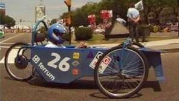

Cómo Participar del Desafío ECO
Categorías particulares y escuelas
Usted puede construír un prototipo y competir en el campeonato. Para esto es necesatio adquirir el Kit de construcción, que se detalla en Particulares junto con los reglamentos y demás información y comunicarse a info@sportlinknet.com.ar solicitando información sobre el precio y la disponibilidad de los kits.
En caso de los establecimientos educativos es necesari mandar los datos del mismo y un mail para que la organización tome contacto directamente con autoridades de la escuela.
Últimas vacantes de inscripción 2013 disponibles 13/06/2013
